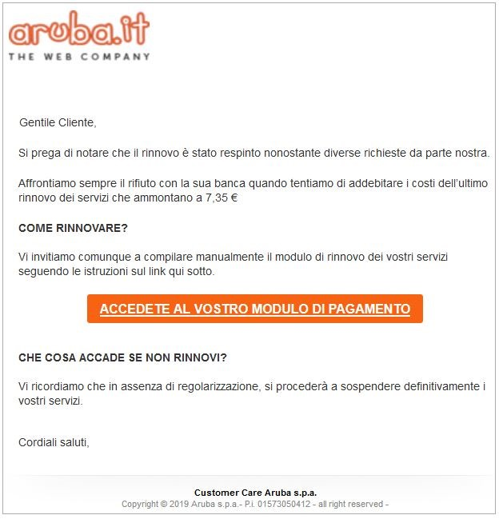
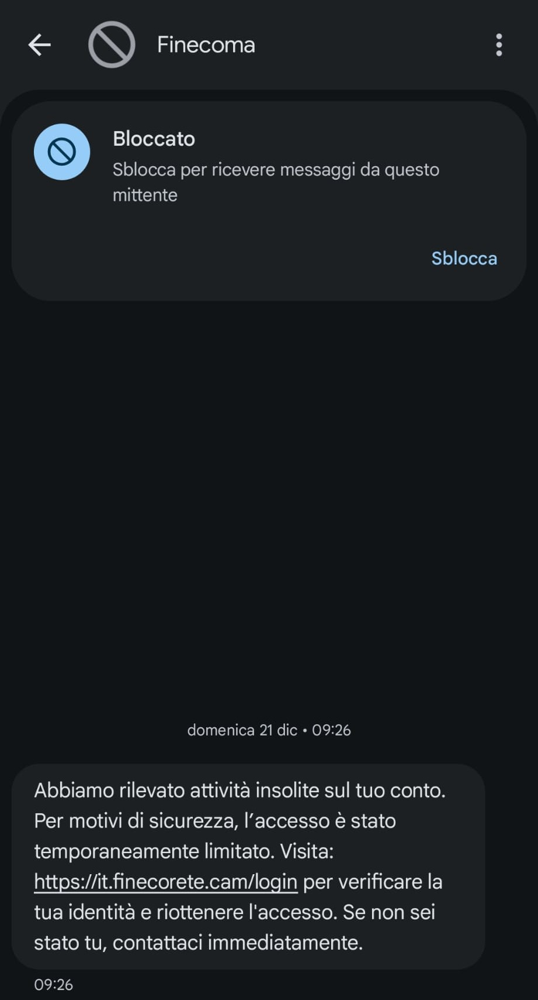

Truffe e Rischi
Le principali truffe online
Il furto di identità digitale è spesso il risultato di astute truffe informatiche, che evolvono costantemente per aggirare le difese degli utenti. Conoscere le tecniche più diffuse è fondamentale per riconoscerle e proteggersi.
Phishing
Questa è una delle tecniche più comuni. I truffatori inviano email o messaggi che sembrano provenire da enti legittimi (banche, servizi postali, fornitori di servizi) per indurvi a cliccare su link malevoli o a rivelare dati sensibili. Spesso il testo è pieno di errori grammaticali o il mittente ha un indirizzo email sospetto.
|
 Esempio di email truffa - phishing |
Smishing
È una variante del phishing che avviene tramite SMS. Riceverete messaggi che vi invitano a cliccare su un link, ad esempio per tracciare un pacco o per un presunto problema con il vostro conto bancario.
|
 Esempio di SMS truffa - smishing |
Vishing
Si tratta di truffe telefoniche in cui i criminali si spacciano per funzionari di banca, operatori di supporto tecnico o altre figure autorevoli, cercando di estorcervi informazioni personali o credenziali di accesso.
|
Esempio di chiamata truffa - vishing |
Falsi siti web
I truffatori creano siti web che imitano perfettamente quelli originali di banche, e-commerce o servizi online. L'obiettivo è raccogliere le vostre credenziali di accesso quando tentate di effettuare il login. Controllate sempre l'URL nella barra degli indirizzi.
Social engineering
Questa tecnica sfrutta la manipolazione psicologica. I truffatori costruiscono una relazione di fiducia con la vittima o la inducono a compiere azioni non sicure, approfittando della sua buona fede o mancanza di attenzione.